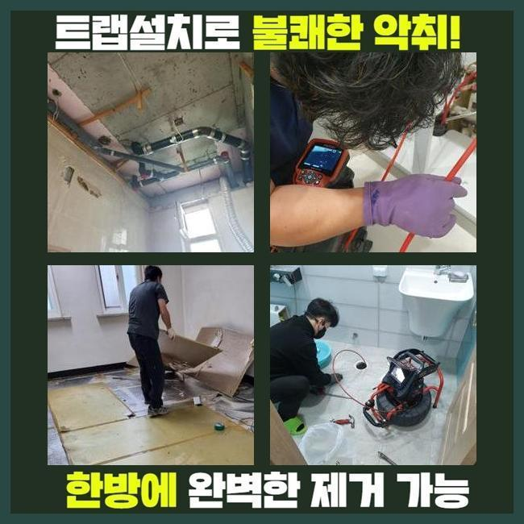
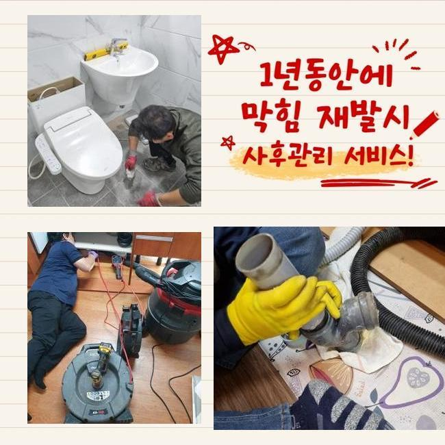
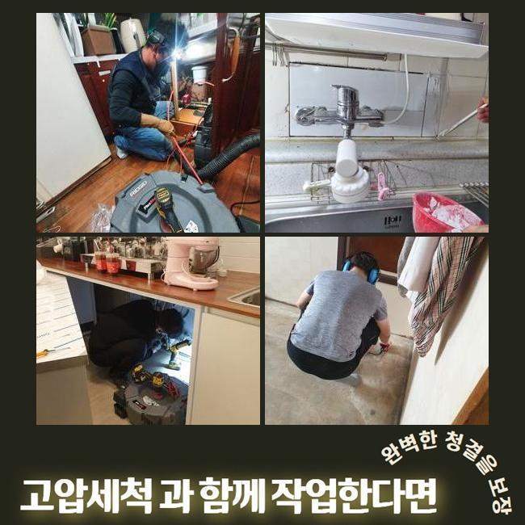
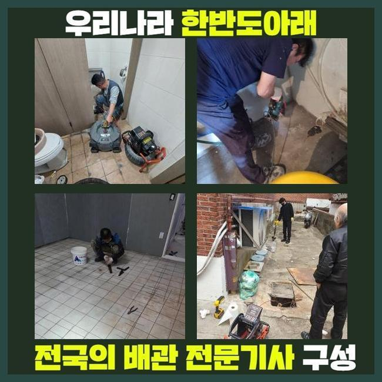
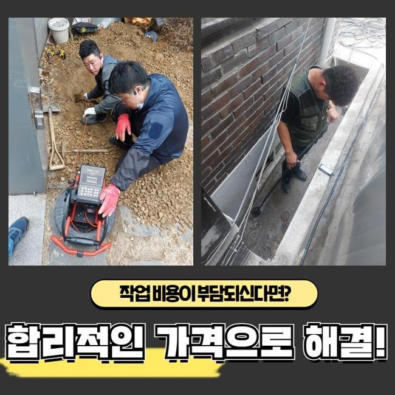
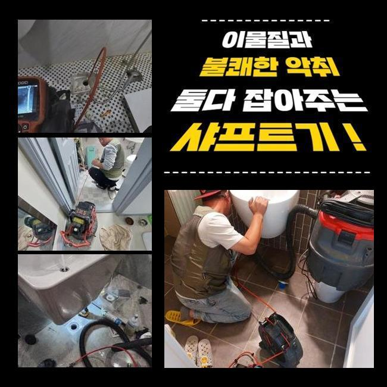

🏠 서대문 합동변기뚫음 대신동 오수맨홀청소 배관막힘누수업체
용인 싱크대막힘 전문 시공 후기

📋 작업 개요
- 위치: 용인
- 서비스 유형: 싱크대막힘, 변기막힘, 배관막힘, 맨홀막힘, 누수수리, 역류해결, 뚫는업체, 배관청소, 고압세척, 설비공사
- 작업 일시: 2025. 3. 14. 21:24
- 업체명: 하수구수사대 (010-5615-2118)
🔍 문제 상황
서대문 합동변기뚫음 대신동 오수맨홀청소 배관막힘누수업체
세탁실이나 욕실은 일상에서 필수적인 곳인데요
따라서 이용하시다가 급작스레 배수기능에 문제가 생기면 갑갑함은 엄청날 것입니다
그러나 물내림이 원활하지 않은 사태를 크게 신경쓰지 않으시는 고객분들이 많죠
시간이 지난뒤 없어져버리거나 심각한 문제로 전이되지는 않을거라 간주하기 때문이죠
하지만 실제는 판이합니다
이에 초반에 적절하게 소제한다면 심각한 사태를 방지할수 있어요
물빠짐이 느리게 된다는건 하수관의 특정 지점에 물흐름을 막는 노폐물이 머물러있다는 이야기입니다
이물들이 추가적으로 누적돼 한층 까다로운 막힘으로 진행되기전에 기술자를 찾아서 진단을 적절하게 이행하고 순차적으로 청소해야 돼요
그저께 해결한 장소를 세밀하게 알려드리도록 할게요
비슷한 증상으로 기술자를 찾고계시는 이웃분들에게 도움이 되었으면 해요
저희들이 방문드렸던 지점은 빌딩 안에 위치한 음식점이에요
의뢰인께서는 싱크대와 욕실배관까지 전면적으로 배수기능이 마비되었다고 이야기하셨어요

🔎 원인 분석
💡 전문가 진단: 정밀 진단 장비를 사용하여 슬러지의 고착 여부를 판명하고 타격/세척 작업을 실시했습니다.
전적으로 고장나버린건 아니라 몇시간 지나고나서는 소멸되었기에 차후에 고쳐보자는 생각으로 운영을 이어나가셨다고 하셨어요
그래서 결국에는 이물의 양이 증대되어서 물빠짐이 안되었으며 오취와 역류증세까지 일어나게 된거죠
배관구조는 난해하고 비좁게 형성돼 있죠
그렇기에 맨눈으로 보아서는 침전물이 얼마나 있나 간파하기 어려워요
그러므로 공사현장으로 이동하기 전에는 내시경cctv를 필히 갖추어야 한답니다
배관내시경의 끝단에는 소형방수카메라가 있어요
그것을 이용해 파악이 힘겨운 파이프 하부까지 선명하게 검사가 가능한것이며 찌꺼기의 특성까지 알수있는 거예요
내시경기기로 관찰한 배수관 내부는 굉장히 더러웠습니다
석회성분을 포함하여 크고작은 잔재들이 적층을 이루고 있었답니다
그러한 찌꺼기들이 들러붙어 바위처럼 견고해진 모습을 보였기에 좁아진 관로구멍을 가로막아 물빠짐이 올바르게 안되고 있었죠
이것들을 방치하는 경우엔 사이즈를 증대시키면서 하수관벽에서 떨어지기 힘들게 되겠죠
그리된다면 한층 정황이 나빠지는 것이기에 빨리 수리하기로 합니다
이럴 때에 이용하는 도구는 플렉스샤프트라는 것인데요

🔧 작업 과정
좁아진 배관틈으로도 쉬이 진입가능한 장점이 있습니다
노즐끝엔 체인노커가 붙어있어 돌면서 하수관내에 잔류하는 딱딱해진 다양한 찌꺼기들을 부스러뜨립니다
즉시 찌꺼기파쇄 시공을 진행했는데요
전동기기와 노커를 연결하고 나서 샤프트기기를 가동시켜 고착화된 노폐물들을 제거해나가기 시작했답니다
어느쪽에 노폐물이 산재해있는지 확인해야 됐기에 내시경카메라를 활용한 관찰도 동반진행 하였어요
해당 기기로 적체량이 많은장소를 우선해서 공사한다면 한층 신속하게 진행할수가 있는거죠
관로 부속들이 파손되지 않게끔 조심스럽게 잔재들만을 명확하게 겨냥하여 세척하였답니다
만약 작업중에 하수관에 충격을 가하면 크랙이 일어나 누수증상이 발생할수도 있죠
그러므로 배관카메라나 분쇄장비가 구비되어야 하는 부분도 필수이지만 전문가의 테크닉 역시 필수적으로 따져봐야하는 부분이겠죠
이물들이 누적된 구간을 깔끔하게 분쇄하고난 뒤에 미미한 파편들까지 제거해주었어요
그다음 통수시험을 시행했어요
다량의 폐수를 단박에 관로로 쏟아부었고 흐름이 지체되거나 역류가 일어나지는 않는지 점검하였어요
별다른 특이사항은 없었으므로 곧바로 인접한 배수시설로 자리를 옮겼어요
이정도에서 마무리진다면 한두달 이용에는 괜찮겠으나 나중에 정체가 생겨날 가망성이 있어서였답니다
욕실쪽의 배수관과 직결된 횡주관로도 분석하여 정체의 근본 동기를 파악해나가기로 합니다
화장실의 배관에서 정체가 나타나면 이어진 횡주관까지 노폐물이 누적되었을 확률이 높아 전면적 관로청소를 진행하는게 바람직하죠
그렇기에 횡주배관으로 간뒤 검사를 세부적으로 진행하였고 저희 예상대로 고착화된 이물들을 발견할수 있었답니다
횡주관과 관련된 개별배수관까지 점진적으로 샤프트기기를 통해 청소했고 잔재들이 떨어져나간 청결한 관로를 발견할수 있었답니다
물티슈를 비롯한 녹기어려운 폐기물들은 욕실을 이용하시면서 다시 쌓일 수 있어요
그렇기에 정기적으로 배관업체를 불러서 관리하시는게 좋답니다
또 장기간 배수관을 유지관리하는 요령도 이해하시기 쉽도록 차근차근 알려드렸어요


✅ 작업 완료
배수문제에 직면한다면 여러가지의 곤란을 감내해야 하기에 심각한 고장을 목도하기 전에 주기적인 진단과 청소를 시행하는게 합당합니다
늦은 시간에도 출장가능하다는 부분도 말씀드렸답니다
구축 아파트에서는 누수도 많이 발발하기에 해당 수리요청도 많은 편이죠
이에 즉시 뚫음뿐만 아니라 누설수리도 시행중에 있다는걸 말씀드렸답니다
어느위치에서 물막힘이 일어났으며 언제 시작되었는지 간략하게 전달해주시면 더 빠르게 상담해드릴 수 있습니다
그러고 나서 예약하신 때에 배관전문가가 전용기구들을 소지한채 방문드리니 편안하게 문의하시길 부탁드립니다




⚠️ 베란다 누수 및 방수 관리 방법
- ✅ 비가 많이 올 때 창틀 주변이나 아래층 천장에 얼룩이 생기는지 정기적으로 확인해 보세요.
- ✅ 우수관 주변 실리콘 마감이 들뜨거나 깨진 틈새가 있는지 손상 여부를 수시로 체크하세요.
- ✅ 베란다 바닥 타일의 줄눈(메지)이 소실되면 그 틈으로 물이 침투하여 누수가 유발됩니다.
- ✅ 누수 의심 증상 발견 시 방치하면 아래층 손실이 커지므로 즉시 전문가의 진단을 받으십시오.
💡 핵심 정리
- 확실한 장비 작업(내시경 점검 및 샤프트 스케일링)으로 원인을 뿌리 뽑습니다.
- 작업 후 1년 이내에 동일한 부위 재발 시 100% 무상 A/S 서비스를 보장합니다.
- 서울 · 경기 · 인천 전 지역에 24시간 언제든 긴급 출동할 수 있도록 항시 대기 중입니다.
❓ 자주 묻는 질문 (FAQ)
🚨 용인 싱크대막힘 문제로 고민이신가요?
정확한 원인 진단과 확실한 시공으로 재발 없는 해결을 약속드립니다.
24시간 긴급 출동 | 서울 · 경기 · 인천 전지역 | 1년 내 재발 시 무상 A/S